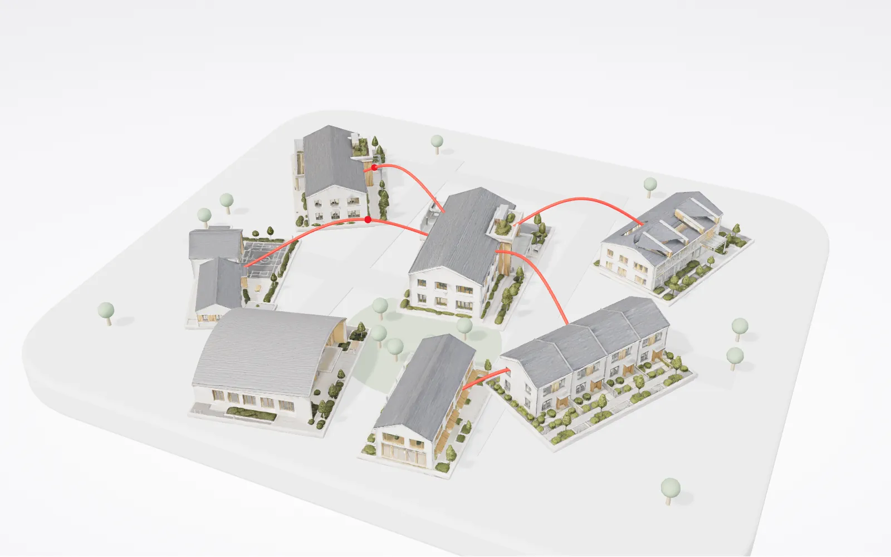

The community
Six places. One thread.
A data center is part of the community around it. Look around the model, then click a building to step inside.
Drag to turn it. Click the model, then scroll to zoom. On a phone, use two fingers.
Our connected impact
Explore a community connected by Equinix, and the care, discovery and opportunity that digital infrastructure helps make possible.
The community
Six places, one data center. Turn the model, click a building to step inside, or let the tour play.

Each story refers to its named location.
The community
A data center is part of the community around it. Look around the model, then click a building to step inside.
Drag to turn it. Click the model, then scroll to zoom. On a phone, use two fingers.
Equinix is not a visitor in these places. We are part of the communities we serve: the clinics and labs that rely on our connections, the schools we open our doors to, the neighbours who share our heat.
01 Care
A radiologist opens a patient’s scan. Somewhere, a family is waiting for what it shows.
3verest 21 regions worldwide, with the U.K. NHS among its users
Medical images are large, heavily regulated and kept for decades, yet clinicians need them in seconds. Healthcare operators also need proof that data, backups and AI inference stay within their jurisdiction.
Equinix does not deliver the care. It provides the secure, local and directly connected foundation that lets 3verest keep critical medical data close, fast and governed.
02 Discovery
In Sydney, researchers compare one child’s cancer with cases studied on the other side of the world.
Children's Cancer Institute Sydney, Australia, with collaborators in Philadelphia, Memphis and Heidelberg
That precision medicine approach creates terabytes of data, and the most useful patterns appear only when it is compared with data from research centres in other countries. In-house computing could not scale to that, and the data needed protecting.
The discoveries belong to the researchers. Equinix helps by shortening the distance between their data and the people they need to compare it with.
03 Opportunity
A student walks into a data center for the first time and asks how it all works.
Equinix employees and the Equinix Foundation Now scaling to every Equinix location
The work that keeps data centers running is largely hidden, so most young people never consider it as a career, or know how to start.
This is Equinix acting directly: our own people opening our own facilities, so students can picture themselves working there.
04 Community
In Minooka, Illinois, a public bike path runs along the data center site, and land is being donated for a future fire station.
Equinix with local governments, utilities and community leaders Minooka, Illinois; San Jose, California; and U.S. communities where Equinix operates
Data centers use power, water and land, and AI is accelerating demand. Communities rightly ask who pays for grid upgrades and what a new neighbour will give back.
Here the thread is not a cable. It is the long-term relationship between a data center and the town around it: roads, paths, power, taxes and local work.
05 Responsible growth
Early swimmers in Saint-Denis are in water warmed, in part, by heat that once left a data center unused.
Equinix PA10 with the local heat network operator Saint-Denis, Paris, France
Servers produce heat that is usually released into the air. The neighbourhood around them needs heat for water and homes.
Here the thread is warm, not digital: heat leaving a data center and arriving as warm water in a public pool.
In numbers
Part of the community
Sixteen years of what a data center gives back, from the first homes warmed by one to the five promises we report against. Step in and let the spine carry you.
A ride through sourced milestones.
From the Equinix U.S. Community Principles. Source (opens in a new tab)
The people behind the connections
“Data centers are the heartbeat of our digital world, but it’s people who keep that pulse healthy and strong.”
Experts in electrical systems, cooling and network engineering who keep facilities running every hour of every day.
The colleagues who work alongside customers such as 3verest and Children’s Cancer Institute, and who carry these stories into every conversation.
The people who turn waste heat into warm water for neighbours in Paris, Helsinki and Markham.
More than 4,600 colleagues volunteered in 2025, from Pathways to Tech tours to WeGive teams choosing local causes.
Kayla’s path. A Pathways to Tech tour sparked her interest. An IBX internship followed within months. Today she is a full-time Equinix Data Center Technician in Chicago. Read the Pathways story
Training and resources
What to download, how to practise, and where to talk about it. The library is being assembled; every item below is a placeholder until its asset is approved.
Approved files for decks, notes and conversations.
Short practice scenarios, each tied to a story on this page. Practise them out loud with the coach: it plays the other person, then steps out and gives feedback against the five promises and the sourced figures.
Open with 3verest or Children’s Cancer Institute: what the connection makes possible, then one promise. Two minutes.
Lead with the Community Principles: ComEd, dry cooling, the Minooka bike path. Acknowledge, then specifics.
Kayla’s path and Pathways to Tech, in your own words. One minute.
Use one figure with its scope and period, and name the source. Practise saying the caveat naturally.
The coach is a conversational voice agent (ElevenLabs) that knows only this page's stories, promises and sourced figures. Choose who it plays, talk or type, then ask for feedback. Conversations are recorded by ElevenLabs for review. Yoodli exercises can be linked alongside later.
The conversation lives in our Viva Engage community: add the stories you see in your region, and help partners carry the message.
Open the Engage pageSources and progress
Results reported for a past period.
Current programmes and customer stories.
Stated future commitments, not yet outcomes.
Equinix Sustainability Report (opens in a new tab) Equinix Foundation (opens in a new tab) U.S. Community Principles (opens in a new tab)
Drag to look around